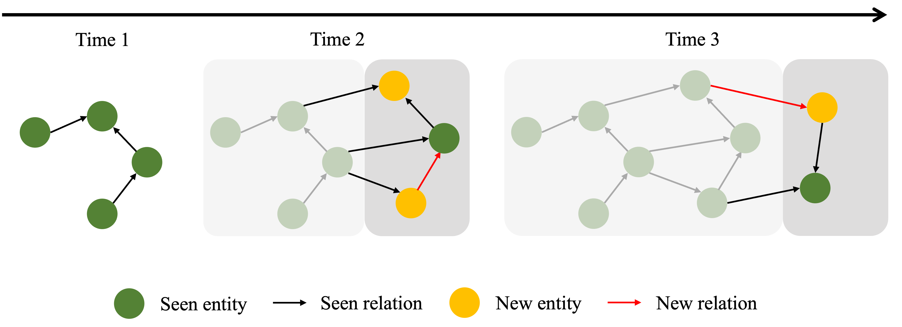
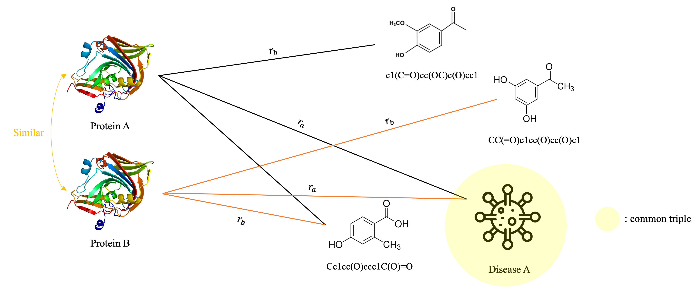
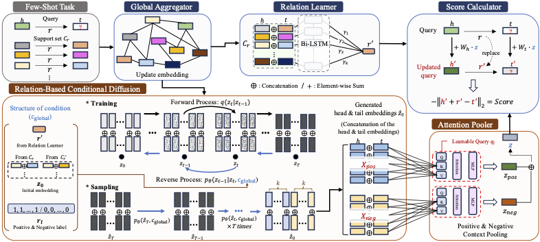
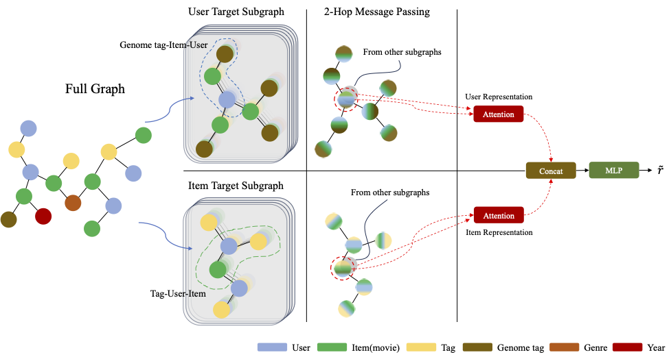

Welcome
안녕하세요. 저는 Knowledge Graph와
Graph Representation Learning을 통해 데이터의
관계를 모델링하고, 도메인 문제를 구조화하여 해결하는 연구/개발을
하고 있습니다. 현재는 Knowledge Graph의 본질적 한계를 보완하기 위한
Continual Knowledge Graph Embedding 및
Inductive Learning 관련 연구를 진행하고 있습니다.
Contact
Affiliation
Data Science Lab (DSLAB), Myongji University
Research Interests
- Graph Representation Learning
- Knowledge Graph
- Inductive & Continual Learning
-
Knowledge Graph Completion / Drug Discovery applications
News
-
[Jan. 2026]
Continual Knowledge Graph Embedding (CKGE) 연구
진행 중 (가설 분리, ablation 및 regularization 설계/실험 단계,
현재 미제출 상태).
-
[2025] 석사우수장학금(이공계) 수혜
(과학기술정보통신부 & 한국장학재단, ₩5,000,000)
-
[2025] KG 기반 drug discovery 연구 (Bioinformatics 및 IEEE JBHI
submission 진행)
- [2025] ReCDAP accepted to SIGIR 2025.
-
[2023] GDSC Solution Challenge Global Top 100
(Guess Me! 프로젝트)
Research
RESEARCH

CKGE
Continual Knowledge Graph Embedding
Add image later
Continual Knowledge Graph Embedding (CKGE)
Continual Learning
KGE
Knowledge Graph
Ongoing Research | Not submitted
시간에 따라 지식은 필연적으로 추가되기 때문에 과거 지식 보존과
신규 정보 적응의 균형을 맞추는 Continual KGE 학습 전략을
설계하고 있습니다.
-
지속 업데이트되는 KG에서 forgetting vs adaptation 균형
문제를 다룸
-
H1(엔티티) / H2(관계) 가설을 분리해 간섭을 줄이는 구조 설계
PAPER

Drug Discovery KG Research
Knowledge augmentation / Inductive GNN
Add publication figure later
KG for Drug Discovery (2025)
Drug Discovery
Knowledge Graph
Inductive GNN
Bioinformatics
Submission
IEEE JBHI
Submission
2 submissions | Bioinformatics (J. Kim, 1st author) / IEEE
JBHI (H. Kwon, 1st author; J. Kim, 2nd author)
Drug discovery 도메인에서 KG 기반 표현 학습/추론을 다루는 두
편의 별도 연구를 진행 및 제출 중입니다.
-
Bioinformatics (Submission, 1저자):
Leveraging Large Biochemical Knowledge Graph for
Knowledge Augmentation
구축 비용이 큰 생화학 지식그래프의 불완전성을 보완하고, 기존
KG에 존재하지 않는 Drug/Protein 등 개체에 대해 local feature
기반으로 의미적 연결 정보가 담긴 임베딩을 계산하는
파이프라인을 설계하는 연구입니다.
-
IEEE JBHI (Submission, 2저자):
Cold-start Drug-Target Interaction Prediction on
Knowledge Graphs with Multi-view Fusion
지식그래프 기반 multi-view fusion을 통해 cold-start
drug-target interaction prediction 성능 향상을 목표로 한
연구입니다.
PAPER

ReCDAP Preview
Few-shot KGC / Diffusion-based approach
Add figure/GIF later
ReCDAP: Relation-based Conditional Diffusion with Attention
Pooling for Few-Shot Knowledge Graph Completion
SIGIR 2025
Top-tier
SIGIR 2025 | Conference Paper | 2024.12-2025.02
J. Kim, C. Heo, J. Jung
-
기존 연구와 달리 Positive 정보뿐만 아니라 Negative 정보 또한
명시적으로 활용
-
Few-shot KGC에서 관계 기반 조건부 diffusion과 attention
pooling을 결합하여 양/음 분포를 명시적으로 반영
PAPER

Recommendation Research Preview
Sampling strategy / Heterogeneous graph
Add figure later
The recommendation systems based on the enhancement of the
implicit and explicit sampling
ICNGC 2024 | Conference Paper | 2024.07-2024.08
J. Kim, J. Jung
- Explicit/Implicit data 처리를 위한 sampling strategy
-
Heterogeneous graph 메타 경로 기반 message passing framework
사용
- Pairwise ranking accuracy 평가 지표 도입
Projects
PROJECT
Calabi
Calendar text -> Personal Knowledge Graph
Add architecture / demo image
Calabi: Personal Calendar Log to Personal Knowledge Graph
협업 프로젝트 | 2025.12.01 ~
Knowledge Graph | Ontology Engineering | Backend + ML/LLM
Integration
-
NER -> canonicalization -> graph load -> taxonomy
classification 파이프라인
- Neo4j 기반 데이터 그래프와 CQ 기반 ontology 운영 구조
-
High-confidence auto + human review (unclassified queue)
운영 모델
PROJECT
CINEMATE
Graph-based movie recommendation
Add recommendation UI
CINEMATE
협업 프로젝트 | 2024.05.11 ~ 2024.08.10
- IMDB/TMDB 기반 영화 정보 수집 및 초기화
- 그래프 기반 추천 시스템 설계 (GCN + MLP)
- 서비스 이용 데이터(좋아요/관심없음) 반영
PROJECT
Quickchive
Scrap service backend / infra / automation
Add service screenshot
Quickchive
협업 프로젝트 | 2022.03.07 ~ 2023.12.31 | 더 편한 스크랩
서비스
-
Google/Kakao OAuth 로그인, Cron task 기반 알람/DB 백업
자동화
-
AWS Route53 + ALB + EC2 인프라 구성, GitHub Actions CI/CD
-
Docker Compose로 NestJS + PostgreSQL + Redis 다중 컨테이너
운영
-
NestJS Interceptor 적용, TypeORM distinct query 관련 N+1
개선
- OpenAI API 기반 자동 카테고리 추천 기능 구현
PROJECT
TOGEDONG
Real-time exercise competition game
Add gameplay screenshot
TOGEDONG
협업 프로젝트 | 2023.09.11 ~ 2023.12.12
-
BlazePose 기반 신체 좌표 추출 및 관절 각도 계산으로 운동
횟수 카운트
- 푸시업/스쿼트 실시간 경쟁 시스템
- Docker 기반 AWS EC2 배포, 프론트엔드와 소켓 통신
- 좌표 신뢰도 임계값 도입으로 비정상 카운트 문제 개선
PROJECT
Guess Me! (friend & family)
Google Solution Challenge project
Add app screenshot / flow image
Guess Me! (friend & family)
GDSC Solution Challenge Top 100
Google
협업 프로젝트 | 2023.01.24 ~ 2023.06.04 | Google Solution
Challenge Global Top 100
-
기억력 감퇴로 인해 소중한 사람들을 잊는 문제 해결을 위한 앱
서비스
- 안드로이드 1명, 백엔드 2명(본인) 팀 구성
-
손글씨 입력 기반 퀴즈형 서비스와 OpenAI API 기반 유연한 정답
판별 로직 구현
-
전문가 피드백을 반영해 Siamese Network 기반 필체 변화 감지
및 보호자 알림 기능 고도화
PROJECT
ForeStore / MBTI / blockchain_go / 써핑
Additional project previews
Add previews per project later
Additional Projects
-
ForeStore: 재고 소진 시기 예측 웹 서비스
(명지대 창의적 SW 프로그램 경진대회 대상)
-
MBTI Others: GraphQL & NestJS API,
PostgreSQL, JWT refresh token 기반 sliding session, OAuth
적용
-
blockchain_go: Go 기반 블록체인 메인넷 구현
실습 (PoW, BoltDB, P2P, full/mining node 시나리오)
-
써핑: 검색엔진 활용 기능 학습용 게임형 교육
서비스 (OpenAI API 기반 유사도 채점 고도화)
Publications
Journal Paper
-
T.T.D. Vu, J. Kim, J. Jung, "An experimental analysis of
graph representation learning for Gene Ontology based protein
function prediction," PeerJ, 2024.
Conference Papers
-
J. Kim, C. Heo, J. Jung, "ReCDAP: Relation-based
Conditional Diffusion with Attention Pooling for Few-Shot
Knowledge Graph Completion", SIGIR, 2025.Top-tier
-
J. Kim, J. Jung, "The recommendation systems based on the
enhancement of the implicit and explicit sampling", ICNGC, 2024.
-
J. Kim, J. Jung, "Deep Graph Attention Networks 구조의 분류
성능 향상을 위한 모델", 2024 한국정보과학회, 2024.
-
J. Kim, J. Jung, "레이블 없는 운동 이미지를 활용한 비지도
분류 모델과 운동 동작 인식 방법", 2023 한국정보과학회, 2023.
Preprints / Submissions
-
J. Kim, H. Kwon, J. Jung, "Anchor-based Inductive Embedding
of Structurally Unobserved Entities in Knowledge Graphs for Drug
Discovery", Bioinformatics, 2025.JournalSubmission
-
H. Kwon, J. Kim, J. Jung, "GLANCE: Pair-Level Fusion within
Multi-View Representations for Cold-Start Drug-Target Interaction
Prediction on Knowledge Graphs", IEEE JBHI,
2025.JournalSubmission
Patent
-
J. Jung, J. Kim, "관계기반 조건부 확산 모델을 이용한
지식그래프 완성 방법 및 장치", Korean Patent, Filed No.
10-2025-0051880, 2025.
Awards & Honors
- 석사우수장학금(이공계) (₩5,000,000), 2025-2026
- 우수신입장학금, 2024-2026
- 백마성적장학금 1종(전액), 2022-2024
- 정보과학회 학부생 부문 장려상, 2023
- 명지대 SW 경진대회 대상, 2023
- GDSC Solution Challenge Top 100, 2023
Education
-
Myongji University, M.S. in Applied Artificial
Intelligence (Sep. 2024 - Current)
Advisor: Jaehee Jung
Total
GPA: 4.5/4.5
-
Myongji University, B.S. in Information and
Communication Engineering (Mar. 2019 - Aug. 2024)
Total GPA:
4.15/4.5, Major GPA: 4.4/4.5
Activities & Certifications
Extracurricular Activities
- GDSC MJU 1기, Backend Part Core Member (2023)
- Likelion MJU 11기, Backend Part Member (2023)
-
국방통합데이터센터 1센터 (2020-2021)
정보보호병 - 보안 및
체계 관제 (Unix 기반 서버 관리 및 악성 공격 차단)
Certifications
- 리눅스 마스터 2급 (2017.09.22)
- 네트워크 관리사 2급 (2018.08.28)
Reference Links